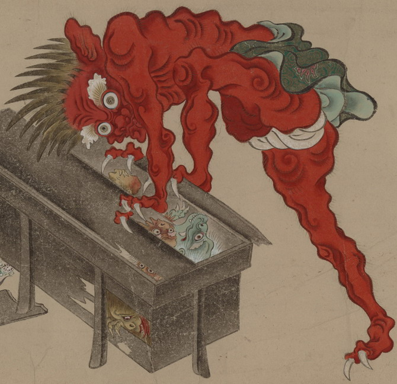

古い唐櫃をこじ開ける巨大な赤鬼。鋭い爪で唐櫃をつかみ、内にいる化物たちを厳めしい形相でにらみつけている。頭髪は逆立っており、緑色の腰巻と白い褌を身につけている。筋肉質の片足を唐櫃にかけている。
出典：親書誌：U426_nichibunken_0154：妖怪絵巻；ヨウカイエマキ／日付：2010／資源識別子：U426_nichibunken_0154_0038_0000
Copyright (c)2010- International Research Center for Japanese Studies, Kyoto, Japan. All rights reserved.